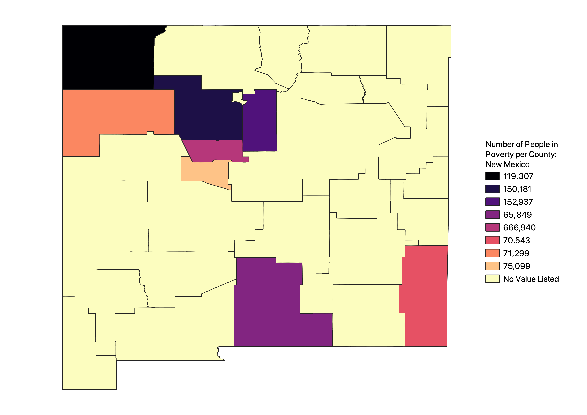

Homework 6: Census data choropleth
Chase Brooks
This is a map of the number of people in poverty per county in New Mexico. The map doesn't use graduated colors because the csv dataset would not appear in the dorp down field for the data values.

Data used for this project
CSV dataset
Link to shapefile